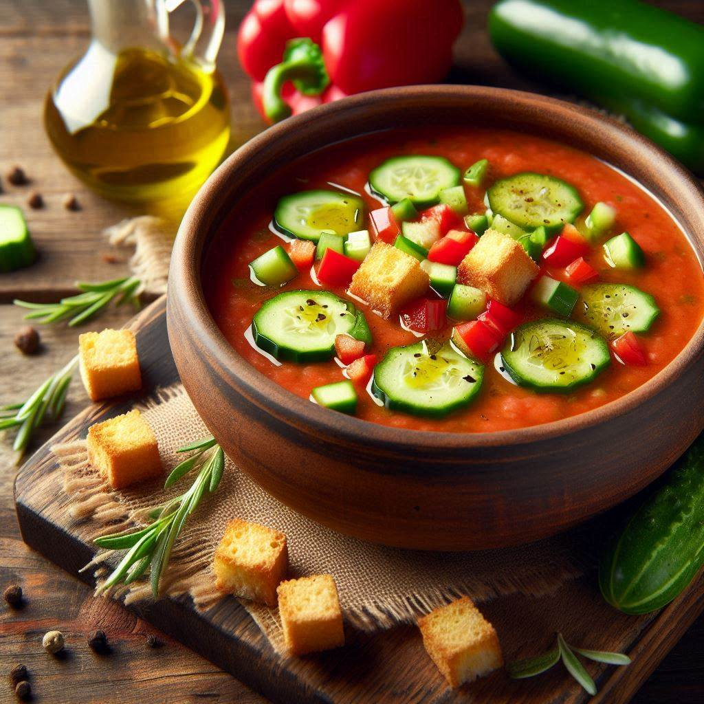

Gazpacho

What Is Gazpacho?
Gazpacho is a smooth, blended, cold soup made with fresh vegetables.
Ingredients
-
4 large fresh tomatoes, peeled and diced
-
½ cucumber, peeled and finely diced
-
½ finely diced red pepper
-
¼ cup onion
-
2 cloves garlic, minced
-
1 teaspoon salt
-
½ teaspoon ground cumin
-
¼ cup extra-virgin olive oil
-
1 tablespoon vinegar
Steps
-
Combine diced tomatoes, cucumber, pepper, onion, and garlic in a large bowl. Stir in salt and cumin.
-
Place all with olive oil and vinegar in a blender. Cover and purée until smooth.
-
Cover and chill in the refrigerator for 2 hours.
Back